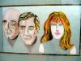
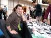

UK Web Comix Thing—Jeremy Dennis
The UK Web Comix Things was held in the Octogon of Queen Mary's College, London, on 20 March 2004.
Picture index
 Outsider art at the local hairdressers.
Mardou with diminutive Antionette, the ice-hearted heroine of her comic Spiro.
Mardou.

I distract Richard Starzecki from selling his new comic, Dusk.
Richard Starzecki.
Craig Conlan is subbing for Woodrow Phoenix, I ask him how his work for Sugar is going, Jenni has more serious topics to discuss.
Craig Conlan,
Jenni Scott.
Yurt and petite amie.
Yurt.
Close-up of the Crabitty doll!
Crabitty Annie-Nora.
This huge sign outside the convention venue referred to an art installation (massed geiger counters connected to big lights, or something) but we didn't stick around to see it, we went to the pub instead.
"Look all girly" I said to Karen Rubins. (Dark) And she did!
Karen Rubins.
The joy of small press comics shopping.
Gavin Burrows,
David Goodman.
Anna Rubins (Dark) and (rather less) petite amie discover the joys of Naked.
Anna Rubins.
Explaination on where we're all going wrong, found outside the main hall.
Andy is hynotised by the shiny lights on my camera.
Andy Roberts.
Ilya with big beer/beard, Roger Langridge, who drew the funky convention publicity and Damian spot the camera and move. Damn.
Ilya,
Roger Langridge,
Damian Cugley.
Goodman brothers drawing idown the pub. That's dedication.
David Goodman,
Arthur Goodman.